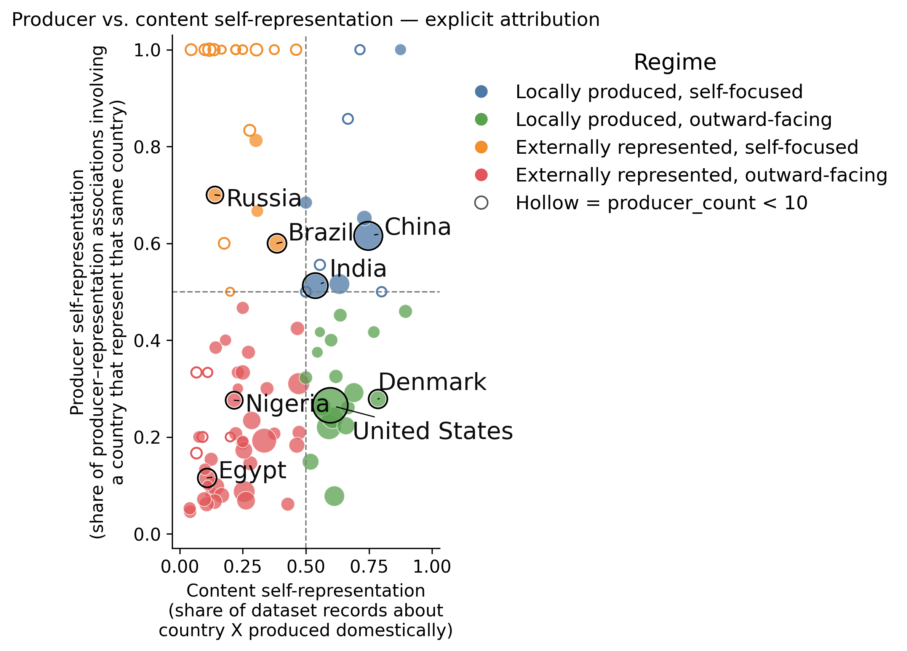
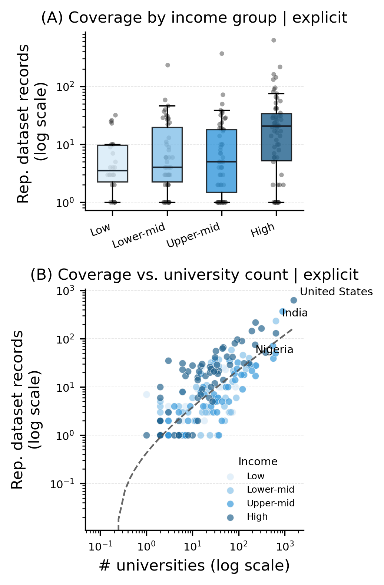
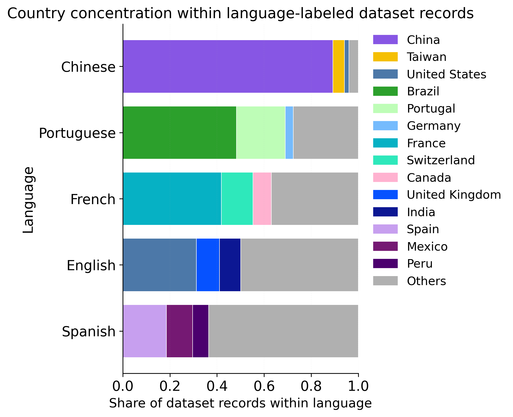

Findings from AtlasNLP — aggregated from 13,462 post-audit dataset records in AtlasNLP-Core, validated against a 1,480-entry human-curated AtlasNLP-Gold reference set.
of country-task pairs have no explicitly attributed dataset records.
Across AtlasNLP-Core, 2,447 dataset records carry explicit country attribution — 4,421 country-record associations spread across 158 of 197 countries. The United States, China, India, the United Kingdom, and Germany alone account for 36.4% of these associations. At the other end, 39 countries have no explicitly attributed records at all, and 121 of 197 have ten or fewer.
The chart shows the top 20 explicitly-attributed content countries by dataset-record count in AtlasNLP-Core. The drop-off from the leading countries to the long tail is steep — see the country × task heatmap for the full fragmentation pattern.
Restricting to countries with at least 10 represented dataset records, the median country spans just 11 of 30 task categories under explicit attribution, with its three most common tasks accounting for 55.6% of its records. Under explicit+inferred attribution, median breadth rises to 13 tasks, at similar (54.3%) concentration.
The United States, China, India, and France have broad "generalist" portfolios (task breadth in the 20s), while countries like Belgium, Bahrain, Israel, and Oman are "specialist" — over 60% of their records sit in just three tasks. The chart shows the 15 most populated task categories in AtlasNLP-Core overall, ranked by dataset-record count.
A dataset about a country's population is not necessarily produced by institutions in that country. AtlasNLP tracks both represented country (the population a dataset covers) and producer country (the institutional location of its creators, from author affiliations).
Among countries with at least 10 represented records and 10 producer-representation associations, 39 of 62 (62.9%) have content self-representation below 0.5 — most datasets about them were produced by outside institutions. China and India are both locally produced and self-focused; the United States and Denmark have high domestic representation but also produce many datasets about other countries; Nigeria and Egypt are represented mainly by outsiders. Production is concentrated too: the United States alone accounts for 21.3% of expanded producer-representation associations, and the top 10 producer countries account for 61%.
The chart below is a simplified view — content-country vs. producer-country record counts for the top 15 content countries — rather than the paper's full self-representation regime plot (Figure 3).

Coverage aligns with broader research infrastructure. Under explicit attribution, national university count correlates with represented dataset-record count (Pearson r=0.65, Spearman ρ=0.61); under explicit+inferred attribution the relationship strengthens slightly (r=0.70, ρ=0.67). The median country in the high-income group has substantially more represented records than the other three World Bank income groups.
The relationship is not deterministic — countries with similar institutional capacity can still differ substantially in coverage — but it shows dataset availability is systematically linked to research infrastructure, not just population or language.

of AtlasNLP-Core dataset records (10,233 of 13,462) target a single language, with no cross-lingual scope; 3,229 (24.0%) are multilingual.
Despite growing interest in multilingual NLP, the field remains dominated by monolingual datasets. This matters for geography too: language coverage does not imply country coverage — see "Which Countries Dominate Each Language?" below.
of Core dataset records (9,956 of 13,462) have no recoverable represented country, even combining explicit and inferred evidence.
AtlasNLP classifies represented-country evidence as explicit (2,447 records, 18.2% — direct evidence tying content, participants, or sources to a country), inferred (a further 1,059 records, 7.9% — plausible but indirect evidence, such as a geographically specific language variety), or unattributed. Language alone is never sufficient for explicit attribution. This gap does not mean these datasets lack geographic context — only that it is not documented in a form that can be reliably recovered.
How many distinct NLP task categories does each country appear in? Restricted to countries with at least 10 represented records, we call a portfolio specialist when its top-3 tasks exceed 60% of records, and generalist otherwise. The United States, China, India, and France are broad generalists (task breadth in the 20s); Belgium, Bahrain, Israel, and Oman are narrow specialists.
The table shows the top 20 countries by dataset-record count, their task breadth, and the combined share of their three most common tasks.
Country concentration varies substantially across widely used languages. Chinese-language records are overwhelmingly associated with China (89.2%). Brazil and Portugal together account for about 69% of Portuguese records, while France, Switzerland, and Canada account for about 63% of French records. English is more geographically distributed — yet the United States, United Kingdom, and India still account for about half of its represented dataset records.
For the top languages by dataset coverage, the chart below shows what share of dataset records come from the top countries — language coverage clearly does not imply even, or equal, geographic representation.

Browse the full dataset index, filter by country or language, and download subsets for your own research.